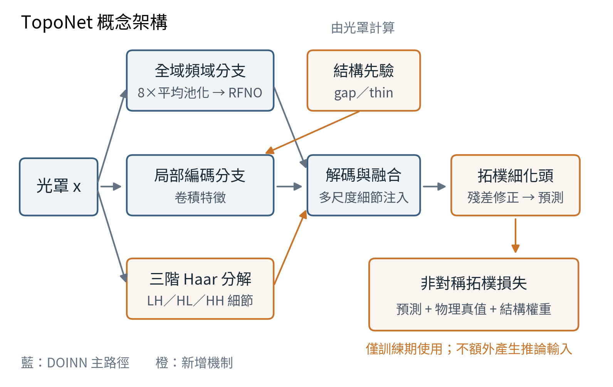
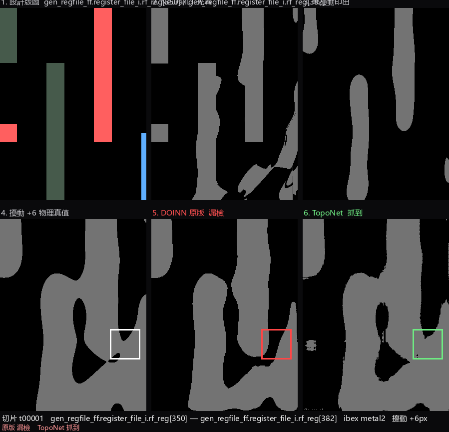

Research highlight專題重點
A high global IoU can coexist with missed connectivity defects. Evaluate event-level errors, cover near-critical patterns during training, and report the cost of higher defect sensitivity.
高全域 IoU 仍可能漏掉影響連通性的缺陷。研究需衡量事件級錯誤、補足近臨界樣本，並同時呈現提高缺陷敏感度的代價。
Project abstract專題摘要
This project evaluates whether neural lithography simulators reliably predict local bridge and break defects, which may have little impact on global pixel similarity. A three-level evaluation combines edge-band fidelity, edge placement error, and matched topology events. Morphologically perturbed masks are re-simulated with a physics-based model to expand coverage of near-critical patterns. TopoNet augments DOINN with Haar detail subbands, gap/thin structural priors, a refinement head, and an asymmetric topology loss, increasing parameters by approximately 2.8%. On the same 571 bridge reference events, mean recall across three training runs rises from 0.8634 for augmented DOINN to 0.9457; mean misses fall from 78 to 31, while false positives rise from 8.67 to 31.33. An Ibex RISC-V extension uses DEF/LEF connectivity to associate geometric bridges with cross-net short risks.
本專題檢查神經微影模擬器是否能可靠預測局部橋接與斷裂；這些缺陷可能只影響少量像素，卻改變圖形連通性。研究建立邊緣帶、邊緣位移與拓樸事件配對的三層評估，並將形態學擾動後的光罩重新以物理模型模擬，補足近臨界樣本。TopoNet 在 DOINN 上加入 Haar 小波細節、gap／thin 結構先驗、拓樸細化頭及非對稱損失，參數增加約 2.8%。在相同 571 個橋接參考事件上，相對增強 DOINN，三次平均 recall 由 0.8634 提升至 0.9457，平均漏檢由 78 降至 31，誤報則由 8.67 增至 31.33。研究另延伸至 Ibex RISC-V 版圖，利用 DEF／LEF 連線資訊分析跨網路短路風險。
Method方法設計
Evaluate connectivity events評估連通性事件
Pair predicted bridge and break events with a physics-based reference, complementing global image similarity with defect-level precision and recall.
將預測橋接、斷裂與物理參考事件配對，以事件級 precision／recall 補足全域影像相似度。
Improve near-critical data coverage補足近臨界資料
Perturb masks morphologically and re-simulate the printed patterns. Use sampling controls to distinguish distribution coverage from additional training data alone.
對光罩施加形態學擾動後重新模擬印出結果，並透過抽樣對照檢查資料分佈覆蓋的作用。
TopoNet and circuit contextTopoNet 與電路情境
Combine wavelet details, structural priors, refinement, and asymmetric penalties; extend event analysis to net-aware short risks on Ibex layouts.
結合小波細節、結構先驗、細化與非對稱懲罰，並將事件分析延伸至 Ibex 版圖中的跨網路短路風險。

Representative results代表成果
Both models are trained on the augmented MixSet. Each run is evaluated against the same 571 bridge reference events. Values below are means across three training runs.
兩模型皆在增強後的 MixSet 訓練，各次評估使用相同 571 個橋接參考事件。下表為三次訓練平均值。
| Metric指標 | Augmented DOINN增強 DOINN | TopoNetTopoNet |
|---|---|---|
| Bridge recall橋接 recall | 0.8634 | 0.9457 |
| Bridge precision橋接 precision | 0.9829 | 0.9453 |
| Bridge F1橋接 F1 | 0.9192 | 0.9454 |
| Missed events (FN)漏檢事件（FN） | 78.00 | 31.00 |
| False positives (FP)誤報事件（FP） | 8.67 | 31.33 |
| Parameters參數量 | 211.6 K | 217.6 K |
Report Tables 21–22. The 0.9457 recall is a three-run mean; single-checkpoint ablations and break-event results use separate reporting protocols.
取自報告表 21–22。0.9457 為三次訓練平均 recall；單一權重的消融與斷裂事件結果採另列的評估方式。
View source tables →查看原始表格 →On 194 unperturbed cells, IoU falls from 0.8935 for augmented DOINN to 0.8207 for TopoNet, and slices with topology false positives rise from 4 to 14. The original DOINN reference has IoU 0.9216 and 1 such slice. These results quantify the cost of improved sensitivity.
在 194 個未擾動 cell 上，增強 DOINN 與 TopoNet 的 IoU 分別為 0.8935 與 0.8207，具有拓樸誤報的切片由 4 個增至 14 個；原版 DOINN 的對應數值為 0.9216 與 1 個。這些結果量化了提高缺陷敏感度的代價。

Interpretation & scope成果解讀與適用範圍
Higher bridge recall comes with more false positives and lower fidelity on unperturbed patterns. Morphology stress is a test proxy rather than a complete model of manufacturing variation. Net-aware short-risk mapping is not a validated circuit-failure prediction, and the results do not establish a general replacement for physics simulation.
較高橋接召回率伴隨更多誤報及未擾動樣本的成像品質下降。形態學壓力測試是代理測試，並非完整製程變異模型；跨網路短路風險映射亦不等同於已驗證的電路功能失效。現有結果尚不足以全面取代物理模擬。
Full report & evidence完整報告與對應證據
The summary and figures on this page are drawn from the project report. The full report is in Traditional Chinese; page links below use the PDF page number.
本頁摘要與圖表整理自專題報告。完整報告為繁體中文；下列連結使用 PDF 檔案頁碼。
- Tables 21–23 · Defect-level results表 21–23：缺陷事件結果PDF p. 34PDF 第 34 頁
- Table 24 · Unperturbed cells表 24：未擾動樣本PDF p. 36PDF 第 36 頁
- Figure 15 · Ibex short-risk example圖 15：Ibex 短路風險案例PDF p. 40PDF 第 40 頁